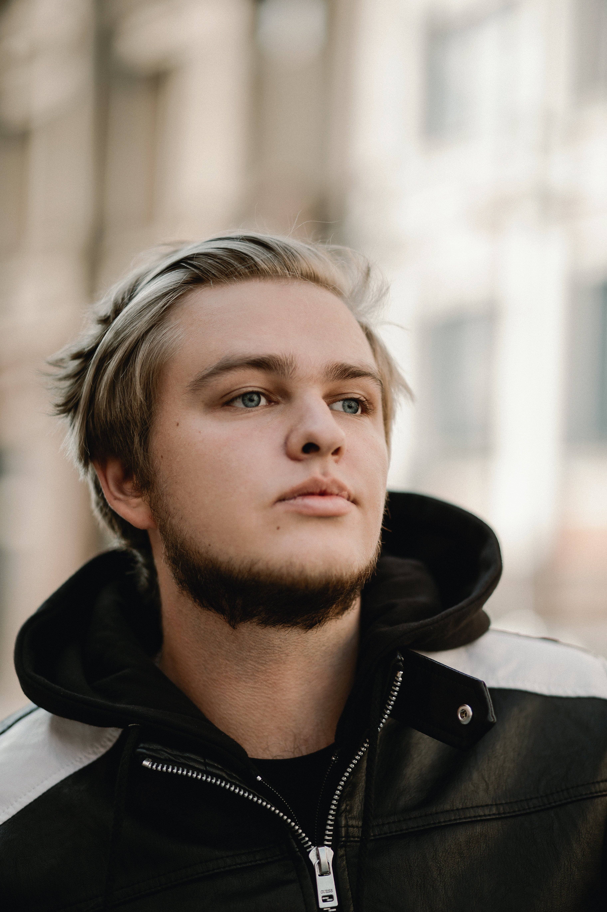
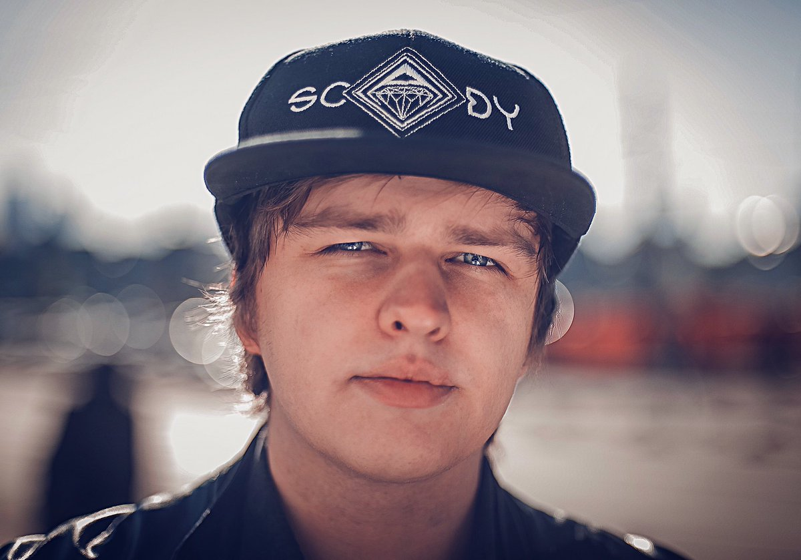
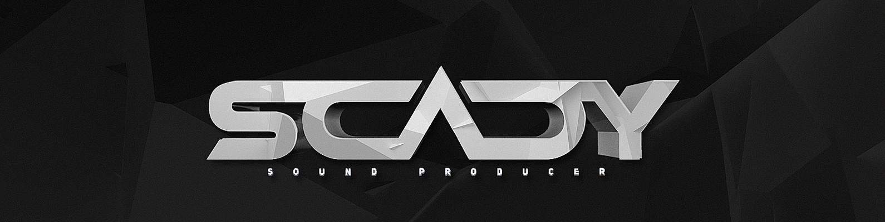

Александр Кузнецов, он же Scady — талантливый битмейкер из Москвы. Молодой музыкант очень известен в хип-хоп кругах, вместе с коллегой PIC Music состоял в объединении «MonsterStarz».
Своих фанатов Скэди время от времени радует различными релизами. На данный момент выпущено пять ЕР: Aquilon (2013), LONE ASTRONAUT (2013), Kleftis (2014), FVTV MORGVNV (2014), AFIRMARE (2015), а также оригинальный альбом Half Monster (2013) с припевами от небезызвестных исполнителей. Также делает ремиксы на популярные композиции отечественных и зарубежных исполнителей..



Дополнительная информация:
|